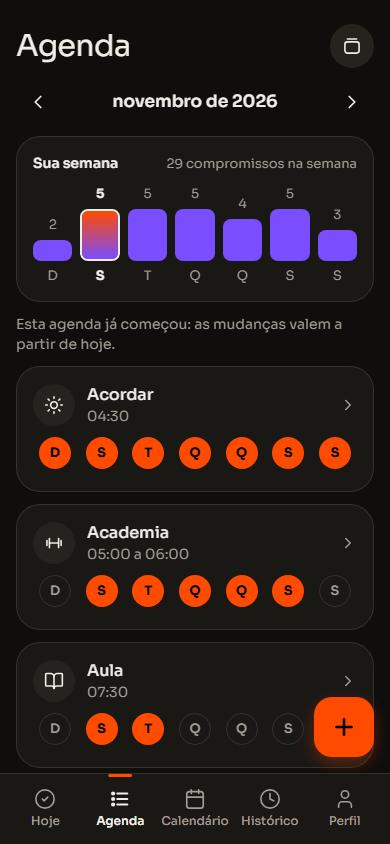
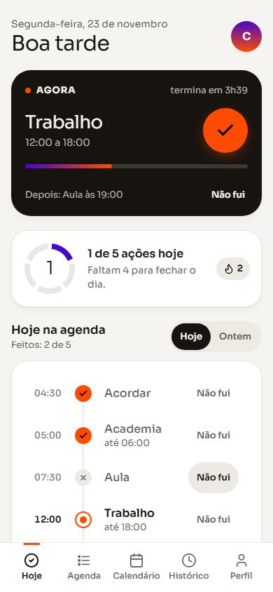
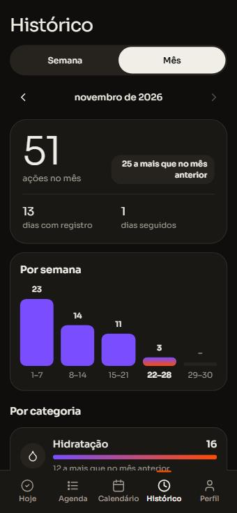

App para Android
Sua semana, cumprida.
Monte a agenda uma vez. O Blueprint organiza cada dia, você marca o que fez com um toque e, no fim do mês, vê o que de fato cumpriu.
- Funciona sem internet
- Em português
- Claro e escuro

Como funciona
Planejar, lembrar, registrar, acompanhar.
Um ciclo simples que se repete toda semana. Sem planilha, sem caderno, sem esforço para manter.
-
Planejar
Compromissos com início e fim que se repetem por dia da semana. No mês seguinte, duplique a agenda e ajuste só o que mudou.
Disponível -
Ser lembrado
Alerta na hora certa, com o app fechado e com antecedência que você escolhe por compromisso.
Disponível -
Registrar
Um toque para registrar. Errou? Desfaça na hora, sem menu e sem confirmação.
Disponível -
Acompanhar
Semana, mês e mapa de calor das últimas 12 semanas. Você enxerga a sua constância.
Disponível
Registro
Um toque. Já está feito.
Tocou em Feito na linha do dia, ou num hábito do registro rápido, e pronto. O anel mostra quanto falta para fechar o dia, sem você abrir planilha nenhuma.
- Desfazer na hora. Registrou sem querer? O aviso com Desfazer aparece por 5 segundos.
- Meta do dia à vista. Cinco segmentos que se acendem conforme você cumpre.
- Algo fora da lista? Use "Outro" e dê o nome que quiser.

Histórico
O passado não muda.
Editar a agenda de dezembro não altera a contagem de novembro. O histórico mostra só o que você de fato marcou, então os números são honestos.
- Semana e mês. Um dia por linha na semana; no mês, quantas vezes cada categoria apareceu.
- Dias seguidos e melhor dia. Constância à vista, sem cálculo.
- Tema escuro de verdade. Confortável à noite, no mesmo app.

Pensado para o dia a dia
Abre rápido. Não atrapalha.
- Sem internet
- Tudo funciona no aparelho, no metrô, na academia, onde estiver.
- Em português
- Datas, dias da semana e textos pensados para quem usa no Brasil.
- Claro e escuro
- Segue o sistema ou fica na sua escolha, com cor de destaque.
- Seus dados são seus
- Ficam no seu aparelho e na sua conta. Excluir a conta apaga tudo, pelo próprio app.
Versão 1.0
Também no app.
-
Alertas na hora certa
Despertar do dia e aviso antes de cada compromisso, com botão para marcar direto na notificação.
Disponível -
Comparação entre meses
Quantas vezes você foi à academia em janeiro, e como isso se compara a dezembro.
Disponível -
Conta e nuvem
Entre com o e-mail e leve a sua agenda para um aparelho novo, sem perder o histórico.
Disponível
Perguntas
Antes de instalar.
Preciso de internet para usar?
Só no primeiro acesso, para criar a conta ou entrar. Depois o app funciona sem conexão, guarda tudo no aparelho e sincroniza com a nuvem quando a internet volta.
Funciona no iPhone?
Por enquanto o foco é Android, instalado por um arquivo .apk. O app foi feito com tecnologia que também roda no iPhone, mas ainda não há versão publicada.
Onde ficam os meus dados?
No seu aparelho. Nada sai dele hoje. Quando a conta na nuvem existir, você escolhe se quer usar.
Como faço quando o mês muda?
Duplique a agenda do mês anterior e ajuste só o que mudou. O histórico dos meses passados continua intacto.
Comece pela próxima segunda.
Monte a agenda em poucos minutos e, no fim do mês, veja o que de fato cumpriu.
Baixar para Android